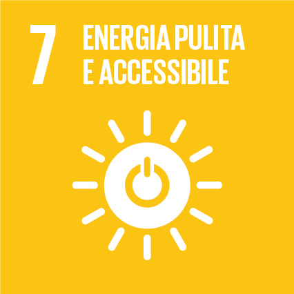
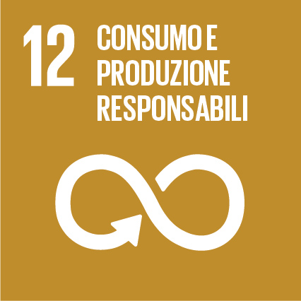
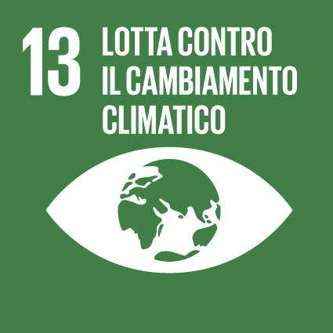

Target: 2027
Status 2025: In corso



Nel 2025 il Gruppo BF ha individuato 123 fornitori rilevanti e ha avviato operativamente il percorso di mappatura ambientale della catena di fornitura. La progressione prevista è stata aggiornata a una media annua del 30% per il periodo 2025-2027.
Il 100% dei fornitori rilevanti è stato coinvolto attraverso comunicazioni e questionari strutturati. Le domande dedicate alla sostenibilità ambientale hanno raccolto informazioni sul consumo complessivo di energia e sulla quota proveniente da fonti rinnovabili, con l’obiettivo di monitorare i progressi e individuare aree di miglioramento. Il tasso di risposta registrato nel 2025 è stato del 9%.